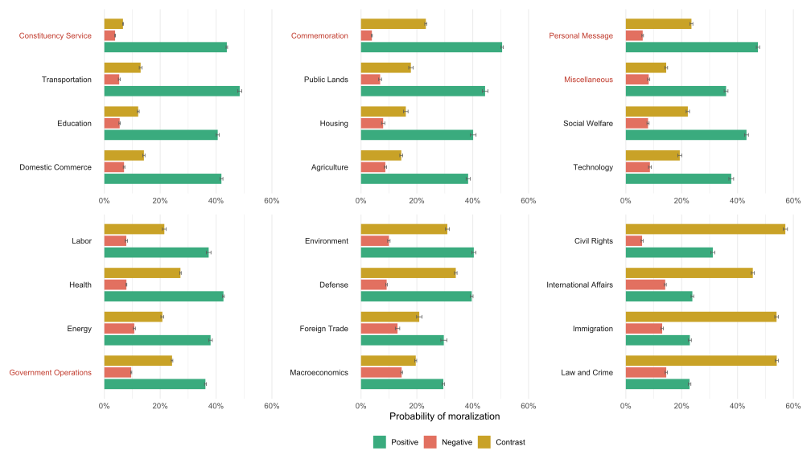
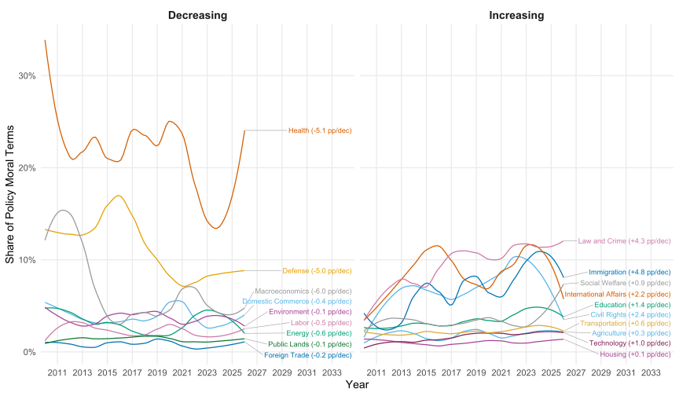
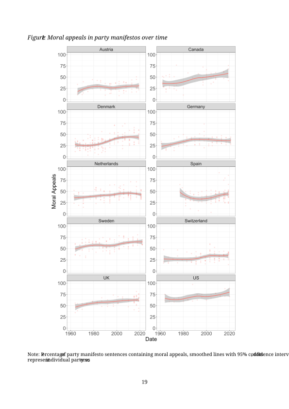

Moralized Policy Communication and Conflict Extension
Aarhus University
The Culture Wars Thesis
- Often as rhetorical device, not clearly conceptualized, “culture” mostly refers to values (Jacoby 2014)
- Rooted in morality, much research shows link to religion, e,g, catholicism in Europe (Cely 2025), five religious traditions in the United States (Layman and Carmines 1997; Layman and Green 2006) - but little to do with faith
- Culture wars issues? Cornerstone moral issues (Goren and Chapp 2017), but moral conviction could be built along other than “morality issues” (Skitka et al. 2021)
Defining Features: Moral conviction, transcending individual issues and policy propositions
Stronger Signals or Looming Culture Wars?
Conflict Extension - when preexisting divisions are becoming entrenched, not everyone is affected (Layman and Carsey 2002)
American citizens, especially partisans, increasingly organize their policy views along liberal–conservative lines (Layman and Carsey 2002; Baldassarri and Gelman 2008; Levendusky 2010b; Lupton, Myers, and Thornton 2015; Hare 2022).

Moral Divide
Party cues explanation: elite polarization and strong divergent cues on policies → constrained belief systems, (Levendusky 2010a; Lenz 2012), party cues literature.
Moral Divide
Values provide a basis for opinions, (Peffley and Hurwitz 1985; Vishwanath 2025), influence considerations around policy even from co-partisans (Slothuus 2010; Kraft 2018)
Moral Divide: Divide across opinions due to elite usage of broad moralized narratives
Moralized communication emblematic of elite polarization, (Simonsen 2025), mobilization of co-partisans, (Jung 2020)
Importantly: lot of leeway in connecting policies and values, (Kraft and Klemmensen 2024), libs/cons share moral intutions, (Blumenau and Lauderdale 2025)
Behavioral Pathway

Methods
Data
- E-newsletters, direct channel to constituents, unmoderated, widely used, free format (U.S. settings)
- DCInbox dataset: coordinated effort to collect all these newsletters from 2010 until now (N = 164,750; after cleaning)
- Thorough cleaning needed (code, spanish, old encodings…)
- Splitting into segments: Haiku 4.5 prompted to create segments, policy domains (N = 792,279)
- Also tried: two sentence windows, tokenized, tf–idf and splitting in places of major semantic similarity drops
Senator Jack Reed’s e-Newsletter Dear ,? I hope you and your family have are having a positive start to 2026.? As Congress kicks off the year, I wanted to share some of what I am working on this week in Rhode Island and Washington, DC.? To learn more, clickHERE ?or the image below. ??????? Jack Reed United States Senator? CONTACT WEBSITE PLEASE REPLY USING THE CONTACT LINKS ABOVE MANAGE MY SELECTIONS |
Holding this Administration Accountable and Fighting for Colorado Dear Neighbor,
This week started on a devastating and somber note with the horrific killing of Renee Good, a mother of three and American citizen who was shot multiple times by an ICE agent in Minnesota. My wife Andrea and I are both heartbroken - for Renee’s friends and family, including her young children, for the people of Minneapolis and Minnesota, and for our entire nation. Put bluntly, we cannot normalize this - and there must be accountability. For months, I’ve pushed back against the lawlessness of the Trump administration, including countless abuses by ICE and the Department of Homeland Security - and I firmly believe that Congress must utilize every tool available to do so. By way of example, as many of you may know, last year ICE blatantly obstructed congressional oversight of detention facilities - including right here in Colorado. Many skeptics suggested that Congress simply had no way to stop them. Not me. Instead, I sued ICE - and served as the LEAD plaintiff in a lawsuit against DHS, Secretary Noem and the Trump administration. And the Federal court in my lawsuit - Neguse et. al v. ICE - just two weeks ago ruled in our favor. The bottom line is that we must keep pushing for accountability and the rule of law, and that’s exactly what I intend to do.Law and Crime · ICE accountability
Services Contact Events Subscribe
We also must continue to describe clearly, and honestly, the illegal and retaliatory actions the Trump administration has perpetrated against our state. For the last several months, President Trump has waged an unlawful scheme of political retribution against Colorado - announcing plans to dismantle the National Center for Atmospheric Research, denying disaster aid for folks impacted by wildfires and flooding, freezing child care and food assistance for hungry families, and vetoing a bill that provides access to clean water for tens of thousands of people in southeastern Colorado. These actions are unconscionable and blatantly retaliatory, and we cannot allow the President to continue inflicting his personal vendetta on our communities. For the past several weeks, our team has been hard at work building coalitions in Congress and in the community to save NCAR, and to expose the administration’s unlawful actions. Yesterday, I took to the House Floor to urge my colleagues to stand up against Trump’s actions and vote to override his veto of the Finish the Arkansas Valley Conduit Act - a bill that initially passed both the House and Senate unanimously. I warned that failure to act could mean no town, no county, and no state will be safe from political retaliation by the administration.Government Operations · Trump retaliation against CO üëáüèæClick HERE or on the image below to watch. I was deeply disappointed that not enough Republicans were willing to put aside political differences and vote in support of the people of Colorado, but remain committed to taking up an all-hands-on-deck approach to combating the reckless directives targeting our state.Government Operations · Trump retaliation against CO
My hope is rooted in knowing that if we work tirelessly - and together - we can successfully push back, like we did just yesterday in forcing the Republican-controlled House to vote on extending healthcare tax credits for working families, and PASSING the bill.Health · Healthcare tax credits
Our work continues. Please continue reading for additional updates. HOUSE REPUBLICANS’ TOP PRIORITY‚ĶSHOWER-HEADS? On Tuesday, House Republicans reconvened Congress after a 23-day recess, and their first legislative priority for the New Year was . . . shower-heads. Seriously. During our Rules Committee hearing, I discussed the myriad of issues Coloradans expect Congress to tackle, rather than these ridiculous proposals. It’s time my colleagues across the aisle get serious and join Democrats in tackling real issues like making life more affordable for folks across our state.Government Operations · Legislative priorities
THE MARSHALL FIRE - FOUR YEARS LATER Last week, I had the privilege and honor of joining constituents and our brave first responders in Louisville for the fourth anniversary of the Marshall Fire. While we have made much progress, the road to recovery has been long and difficult for so many, and there is still much work to do. My team and I are committed, as always, to standing with the community and going above and beyond to assist all those impacted by that terrible fire, as we fight for serious reforms on wildfire mitigation, consumer protections and more in Congress.Constituency Service · Marshall Fire recovery Pictured left: Congressman Neguse speaks to group of constituents at Marshall Fire Anniversary event. Pictured right: Congressman Neguse speaks to a constituent at Marshall Fire Anniversary event.
WHAT ELSE HAVE WE BEEN WORKING ON? üá∫üá≤ As I said during Trump’s second impeachment trial, for centuries we accepted the peaceful transfer of power as fact. Five years ago, that all changed, when our Capitol - and our republic - were attacked. Let us never forget the brave law enforcement officers who put their lives on the line to defend our democracy.Commemoration · Capitol attack
üèÖNominations Requested! The Gloria T. Tanner Congressional Award for Outstanding Community Service is awarded annually to a Coloradan who demonstrates a record of leadership and community service. The award honors the legacy of an extraordinary public servant, whose leadership & dedication will inspire future generations for years to come. Submissions for the Gloria T. Tanner Congressional Service Awards for Outstanding Community Service are currently open through February 6th, 2026.Constituency Service · Tanner Award Use the link HERE to submit your nomination.
‚ô•Ô∏è With February fast approaching, I’m excited to invite folks across our community to participate in our annual Valentine’s for Veterans program, an opportunity to show our veterans how much we appreciate their dedication and service to our country with handmade cards.Constituency Service · Valentine’s for Veterans Click HERE to let us know you want to participate, and be sure to check out our post from last year on this !
Please continue to stay safe, stay healthy, and - despite everything - stay hopeful! Sincerely, Joe Neguse Member of Congress WASHINGTON, DC OFFICE 2400 Rayburn HOB Washington, DC 20515 Phone: (202) 225-2161 BOULDER OFFICE 2503 Walnut St Suite 300 Boulder, CO 80302 Phone: (303) 335-1045 FORT COLLINS OFFICE 1220 South College Ave Unit 100A Fort Collins, CO 80524 Phone: (970) 372-3971 FRISCO OFFICE 620 East Main Street Frisco, CO 80443 Phone: (303) 335-1045 | Share on Facebook | Share on Twitter Click Here to view this email in your browser Click Here to be removed from this list View in your browser
Policy Classifier
Policy content (62.7%)
Nonpolicy content (37.3%), Judge-Lord, Powell, and Grimmer (2026)
constituency service, greetings, polls, personal messages, symbolic issues, commemorations, etc.
Comparative Agendas Project categories
| Category | % |
|---|---|
| Health | 12.3 |
| Macroeconomics | 6.6 |
| Defense | 5.1 |
| International Affairs | 4.0 |
| Domestic Commerce | 3.9 |
| Education | 3.8 |
| Law and Crime | 3.7 |
| Immigration | 3.0 |
| Energy | 2.9 |
| Social Welfare | 2.4 |
| Transportation | 2.3 |
| Environment | 2.3 |
| Agriculture | 2.1 |
| Civil Rights | 2.0 |
| Labor | 1.7 |
| Technology | 1.5 |
| Public Lands | 1.2 |
| Housing | 1.0 |
| Foreign Trade | 0.9 |
Moralized Communication
Research Design

Moralizing Policy
Results: Moralizing Policy

Results: Moralizing Policy

Results: Moralizing Policy

Results: Trend Robustness

Europe
Moralization in party manifestos (Simonsen and Widmann 2025)

Experiment
Experimental Conditions
- Two between-subjects conditions: moralized (\(Z=1\)) vs non-moralized control (\(Z=0\))
- Both drawn from co-partisan communication (matched to the respondent’s party)
- Six treatment texts per condition: three on care/harm, three on binding foundations
- Moralized: real congressional e-newsletters, edited only to de-identify sender, year, constituency
- Control: LLM-generated (Opus 4.6) via stimulus-augmentation framework (Jeong 2026), manipulating moral framing only
Survey Flow
- Texts presented by foundation: first the care/harm set, then the binding set
- Attitudes measured after each set
- Seven-point agree–disagree scales, items in random order
- Targeted attitudes map onto issues addressed in treatment
- Non-targeted attitudes share the same foundation but are never addressed → dynamic constraint
Outcomes
Targeted attitudes — issues addressed in treatment
- Care/harm: opioids (enforcement vs funded treatment); self-regulated vs mandated emissions; protect citizens vs weapons to Ukraine
- Binding: background checks for gun purchases; housing the homeless as shared responsibility; anti-discrimination policing
Non-targeted attitudes — same foundation, never addressed
- Care/harm: tightening asylum rules; work-search requirements for unemployment benefits
- Binding: mandatory childhood vaccinations; multilingual public services
Sample
- 3,000 respondents, representative of the U.S. by quotas
- Random assignment to moralized vs non-moralized condition
- No respondents excluded
Example Stimulus: Opioids (care/harm)
Moralized · \(Z=1\)
In just one year, nearly 110,000 Americans died from a drug overdose — 75,000 of whom were killed by synthetic opioids like fentanyl. It’s unacceptable. Too many families have lost a loved one to this devastating epidemic because President Biden refuses to secure our open border. I proudly voted for the HALT Fentanyl Act to hold dangerous drug traffickers accountable and equip our law enforcement officials with the tools they need to confiscate deadly drugs, protect our families, and save lives.
Control · \(Z=0\)
In just one year, nearly 110,000 Americans died from a drug overdose — 75,000 of them from synthetic opioids like fentanyl. The numbers are staggering. Overdose deaths continue to climb from this widespread epidemic because President Biden refuses to secure our open border. I proudly voted for the HALT Fentanyl Act to hold dangerous drug traffickers accountable and equip our law enforcement officials with the tools they need to seize illegal drugs, disrupt the drug supply, and reduce overdose deaths.
Example Stimulus: Carbon Emissions (care/harm)
Moralized · \(Z=1\)
Affordable and reliable electricity is a necessity. It heats and cools our homes, it powers our hospitals so patients can receive life-saving care, it keeps the lights on in our schools so students can learn, and it fuels our businesses to create jobs and help our economy move forward. Unfortunately, the EPA is threatening to cut the power by restricting access and raising energy costs with its proposed regulations on power plants. That’s why I’m working to protect our community from this harmful EPA regulation and many more like it.
Control · \(Z=0\)
Affordable and reliable electricity is a key economic input. It heats and cools our homes, it powers our hospitals so they can maintain continuous operations, it keeps the lights on in our schools so they can stay open, and it fuels our businesses to create jobs and help our economy move forward. Unfortunately, the EPA is set to reduce the power supply by restricting access and raising energy costs with its proposed regulations on power plants. That’s why I’m working to oppose this costly EPA regulation and many more like it.
Models and Outcomes
H1 — Constraint (difference-in-slopes)
\[Y_A = \beta_0 + \beta_1 S + \beta_2 Z + \beta_3\,(Z \cdot S) + \varepsilon\]
- \(S\) = factor score (mean of the remaining attitudes); \(Z\) = treatment
- Key quantity is \(\beta_3\): does treatment tighten how the broader structure predicts \(A\)?
- Estimated per attitude — (i) targeted-on-targeted, then (ii) non-targeted predicted from the targeted factor score
H2 — Moral principles evoked when explaining multiple beliefs post-treatment (specification in progress)
Work in Progress / Comments Welcomed!
References